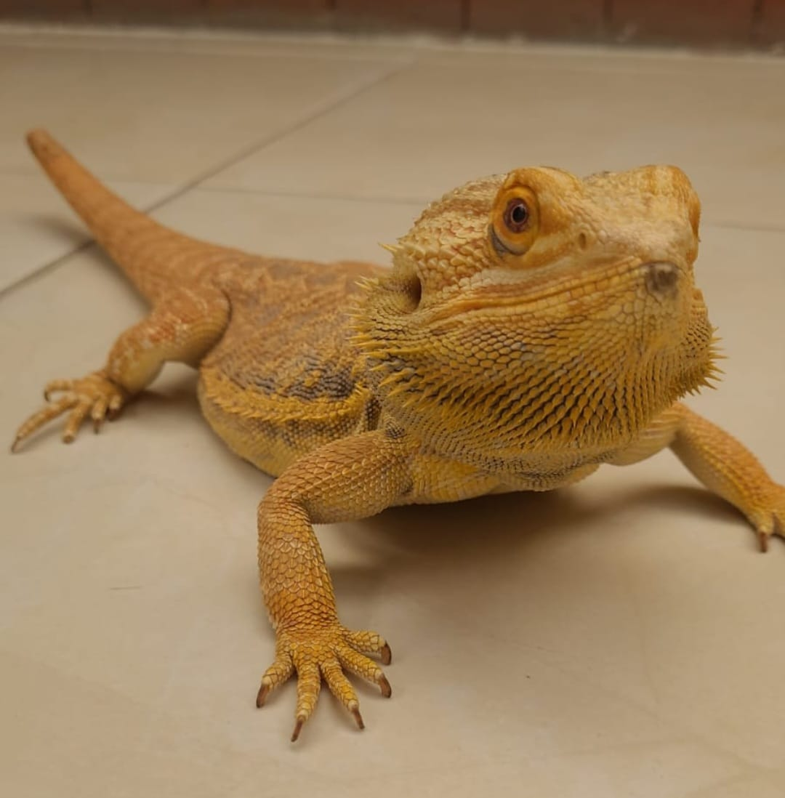

¿Quién soy?
Me llamo Juan Manuel Ariza, nací en Bogotá y he vivido toda mi vida aquí, los 24 años que tengo.Junto con mi hermana mayor no fui muy amigo en mi niñez, pues me lleba 10 años, entonces yo era "muy chiquito para ella"..., afortunadamente nuestro hermano del medio solo me lleva 5 años, entonces con él si compartí, jeje, más de lo que a él le hubiera gustado, lo molesté hasta el cansancio. Pero bueno, ahora puedo decir que llegamos a ser buenos amigos.
Mi madre me rega√±√≥ bastante, pero tambi√©n logr√© hacer que al √©l tambi√©n lo rega√±aran, me saf√© de varias que, por supuesto, a √©l le cayeron, pues siempre alguien debe llevarse el rega√±o ü§£.
Mi Familia
Mi padre, Hernando, es una persona que siempre está molestando –ya saben de quién lo heredé–, se ríe y burla todo el tiempo, pero no lo confundan es bueno y serio cuando se debe.Mi madre, Beatriz, es super hospitalaria y le gusta ayudar a los demás aún cuando sea difícil, gracias a ella ahora maduré; bueno... lo necesario, jajaja.
Mi hermana mayor, Carolina, es casada y tiene dos hijos, su niña nació hace 3 semanas! Aprovecho y menciono que al día de hoy ya somos amigos, la infancia ya quedó atrás.
Mi hermano Daniel, del que ya saben un poco, hoy día vive en Australia con su pareja, es piloto y mecánico automotríz y le encanta comprar ropa, en especial zapatos, ¡tiene más de 15 pares!
Y el último de los hermanos soy yo. Estudié cocina, repostería y panadería, pero pronto seré programador. Mi novia se llama Gabriela es profesora y le gusta muuucho bailar; un dato triste es que a mí no, pero estoy en el proceso, jeje.
Tengo dos mascotas, una común y otra no, un perro y un lagarto (Pogona Vitticeps). 
Comida Favorita
√ Mi sitio web favorito es
JW.ORG
:)